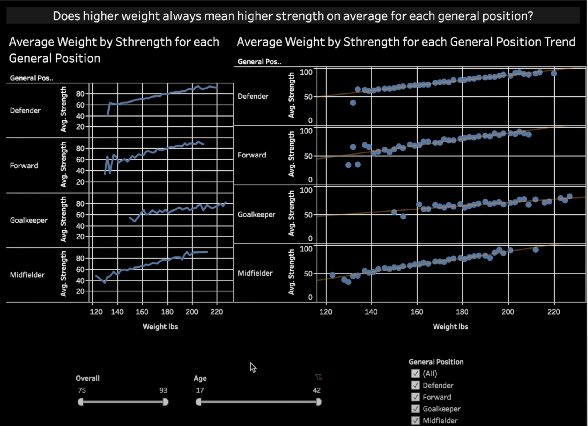
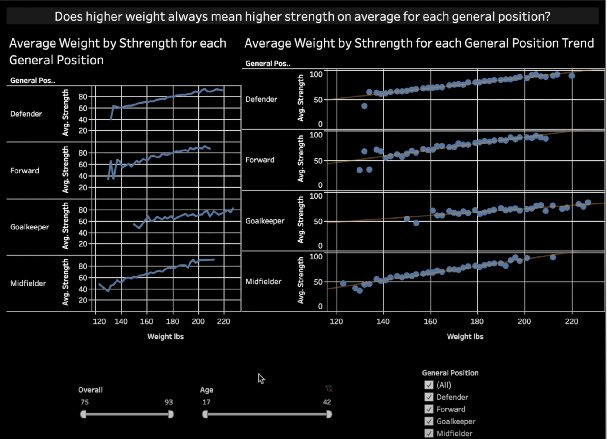
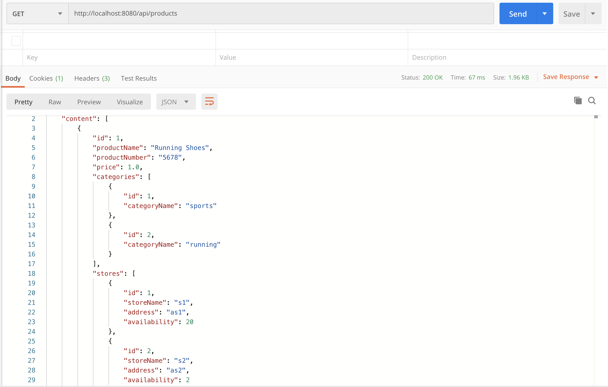
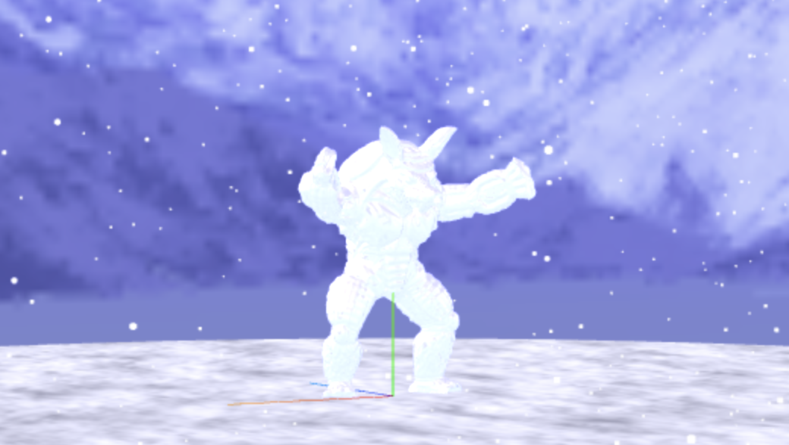

This project is what you are seeing right now! It is a responsive website developed with plain javascript, html and css. It contains some of my projects and a little bit of info about me. The website is fully functional, however I have in mind to make more pages to include more information about the projects, as well I will keep adding new projects. This website do not include all my projects, more can be find in GitHub and some are still in my computer waiting to be polished.
 

Fun With Fifa is a full fledged data science project which analazyes data from the game fifa 21 to find intersting relationships between the players and answer fun questions. The project was developed with python(numpy, pandas and seaborn) and presented with Tableu. The project was made to resemble a professional data analysis. Research, EDA, Analysis and Presentation were conducted in a professional manner.

Plan it is an horizontal prototype for an android app which helps you plan your party. It was developed with Android Studio and Java. The project was made with a team for my computer human iteraction class. The app follows design and user principles. To not make this long it simply means it follows the rules for UX and UI design, which in turn make the app user friendly. The app has various capabilites, it helps you create your event with as much or little help the user needs, and it recommends the user with various items/personel for the event. It is simply the best app to plan your event.

Shop API is a restful api to manage everything a shopping website might need. Developed with Java, Spring-Boot and Postgresql. It has the ability to get, retrive, change or delete the products, shops, categories, feautures, feautures of feautures, etc.. of your shops. It also includes a UI and pagination for easy data vizualization.

Frozen Armadillo is a computer graphics project that models a frozen armadillo in a snowy field. The project was developed with Javascript, Three.js, and WebGl. The interactive scenery was almost fully rendered with WebGl. Lighting, Refractions, Skybox, Particle Effects, etc.. were all made from scratch.
I fooled you right, you thought I found the way to make you a billionaire, well sadly I do not know how to do that yet. The title is misleading. The paper talks about what matters in a fund manager to get the best returns. The paper was created by analyzing data of fund managers and using statistical methods to process the data to find what qualities matter in a fund manager to get the best returns. The data was processed with STATA, however this could be easily be done in Julia, Python or R.
Buses R Us is an android app that models the transit of all the buses in Vancouver with their location and scheduled time with the help of the translink api. The project was developed with Java. This is the first large project I made in UBC. It was for my software construction class. This project made me learn how to parse data, make use of api's and do complex programming tasks. While I would love to share the full app, I am not allowed. The structure of the app was made with ubc proprietary software. However, if you will like to know more you can see the README in the GitHub page or contact me personally.

Sadly, this is the end of the road. More projects will be posted here periodically and the portfolio will expand and include new functionalities. Meanwhile, sit tight and prepare for what is coming. If you wanted too see more you can always check my github page! ❤️